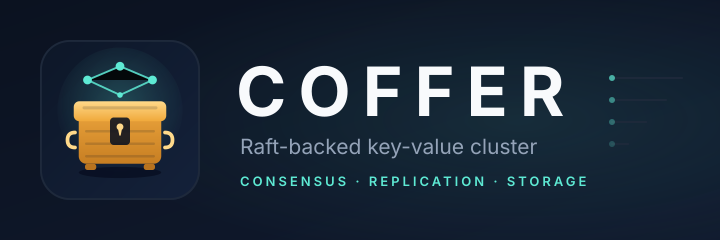

Netty transport
Pooled TCP connections, a protobuf envelope, and asynchronous request/reply.

A distributed systems playground: a custom Netty transport, gossip membership, Raft consensus, and a replicated key-value store.
Pooled TCP connections, a protobuf envelope, and asynchronous request/reply.
Seed discovery, incarnations, tombstones, and anti-entropy between peers.
Leader election, heartbeats, log replication, and persisted term and log.
Put, get and delete through the Raft log, with an interactive shell.
docker compose up --builddocker compose exec node1 java -cp "coffer.jar:lib/*" \
io.github.brunomvpcosta.coffer.KvClient node2:8081
Then try put hello world, get hello,
keys, and info.